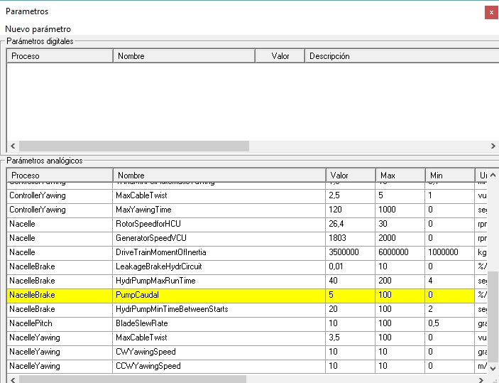
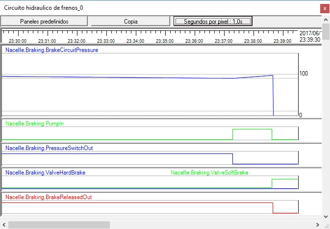

Objectivo:Reconhecer os sintomas de uma falha na bomba do sistema hidráulico.
O que observar:Pressão de circuito, estado da bomba, alarmes associados e comportamento do atuador.
O que observar:Diferenças entre operação normal e falha, e que evidências confirmam o diagnóstico.
□ Compare com o comportamento em condições normais antes da falha.
Esta sessão prática tem como objetivo mostrar como o protocolo implementado pelo controlador detecta que a bomba tem um problema. A bomba pode ter vários problemas:
a) Pode ter «perdas de pressão» quando não estiver activada. Este caso é apresentado na classeObservação de perda excessiva de pressão no circuito.
b) Pode ter perdido a capacidade de impulso, o que significa que o fluxo não é como deveria ser quando ativado.
c) Também pode haver problemas elétricos, como um fusível queimado.
d) etc.
In the wind turbine on which this simulator is based, the mechanism for detecting normal behavior of the pump and its accessories is detected by the time it takes to raise the pressure in the hydraulic circuit above the green zone corresponding to the pressure switch. This method does not distinguish between all possible causes; however, it is a very reliable procedure and does not use sensors that need to be calibrated.
Neste simulador, todos esses problemas são emulados usando o "NacelleBrake. PumpCaudal"parâmetro.

Fig. 1.
Você deve garantir que a turbina eólica está em produção (ligada à grade) e observar o "Pressão do circuito do travão" indicador no "SinopticDriveTrain" synoptic. Além disso, certifique-se de ter um gravador com o "Circuito hidráulico dos travões" painel.
Para criar a situação de falha, podemos diminuir o valor padrão (5 de um máximo de 100) para um valor 50 vezes menor (0.1). Para alterar o valor, siga as instruções descritas emMudando o valor de um parâmetro.
Você verá que o Controlador emite um incidente com a descrição "Tempo de bombeamento muito longo" e desliga o gerador da rede. Isto ocorre após uma considerável quantidade de tempo, uma vez que a pressão no circuito hidráulico deve cair abaixo do menor valor da zona verde para que o controlador ative a bomba.
No registrador, você verá uma evolução de sinal semelhante à mostrada na figura a seguir.
